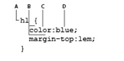

1.- ¿Que es un XML y para qué sirve?
XML es un lenguaje de marcado similar a HTML. Significa Extensible Markup Language (Lenguaje de Marcado Extensible) y es una especificación de W3C como lenguaje de marcado de propósito general. Esto significa que, a diferencia de otros lenguajes de marcado, XML no está predefinido, por lo que debes definir tus propias etiquetas. El propósito principal del lenguaje es compartir datos a través de diferentes sistemas, como Internet.
2.- ¿Que características tiene un documento HTML?
Los documentos HTML utilizan la extensión .htm o .html. Son archivos de texto plano que pueden ser creados mediante cualquier editor de texto, aunque también existen programas específicos para editar HTML. Y se caracterizan por empezar y terminar por el elemento html. Es decir, al principio y al final del documento encontraremos el elemento de inicio y cierre respectivamente.
3.- ¿Qué es y para qué sirve un archivo XHTML?
XHTML es un lenguaje de etiquetado que permite editar paginas web. Este lenguaje está basado en HTML, pero a diferencia de éste, sus reglas son más rigurosas y versátiles que el HTML. XHTML se utiliza para marcar contenido como texto, imágenes y enlaces en forma de hipervínculos para crear una cierta estructura que puede ser mostrada por los navegadores. Los documentos pueden ser estructurados con XHTML para hacerlos legibles para un analizador.
Los documentos HTML utilizan la extensión .htm o .html. Esta extensión avisa al navegador web, que en este archivo hay contenido HTML y dicho contenido se restituye en la ventana del navegador siguiendo las reglas del lenguaje HTML.
Las etiquetas se utilizan para definir el contenido de una página HTML. Estas etiquetas quedan enmarcadas dentro de los símbolos "menor que" (<) y "mayor que" (>) y se ponen al principio y al final de un objeto o texto utilizado en la página HTML.
Por ejemplo: < h1>Welcome to Worldwide Apparel's intranet< /h1>HTML y XHTML están estrechamente relacionados. Existe una lista de reglas definidas por el W3C que especifican los límites de HTML y XHTML.
Las diferencias más importantes entre XHTML y HTML son estas:
• En XHTML, todas las etiquetas deben escribirse en minúsculas.
• XHTML exige que todas las etiquetas de apertura lleven su correspondiente etiqueta de cierre, es decir, siempre debe existir una etiqueta al principio y otra al final de cualquier elemento, sea un título, párrafo, imagen u otro.
Todas las etiquetas XHTML deben tener cierre, aun en el caso de etiquetas especiales que técnicamente no necesitan etiquetas de apertura y cierre. XHTML exige que el anidamiento de etiquetas (su inclusión unas dentro de otras), siga unas reglas estrictas.
Al inicio de toda página web debe aparecer una declaración Doctype. La declaración de "tipo de documento" le aporta pistas al navegador sobre el tipo de información que se va a encontrar en la página. Puesto que las especificaciones de HTML y XHTML son distintas, el navegador sabe así qué lenguaje va a interpretar y representar.
W3C es la abreviatura con la que se conoce al World Wide Web Consortium una organización sin ánimo de lucro cuyo objetivo consiste en orientar la evolución de la Web. El W3C ofrece directrices y reglas para especificaciones como HTML y XHTML.
La validación de páginas del W3C es el aspecto más tangible de un diseño web conforme a estándares, pero hay también otras ventajas importantes al crear páginas bien estructuradas:
• Menos código
• Mantenimiento más sencillo
• Compatibilidad
CSS utiliza un lenguaje distinto de HTML. CSS nos permite aplicar estilos de manera coherente a los distintos elementos de las páginas del sitio web, de modo que los títulos, listas y párrafos pueden verse igual en todas y cada una de las páginas.Partes de la sintaxis de CSS:
A. Selector. B. Declaración. C. Propiedad. D.Valor.
La selección de fuentes es importante.
Elegir la fuente correcta tiene un gran impacto en cómo los lectores experimentan un sitio web. También es importante elegir el color y el tamaño de texto correctos para la fuente. CSS hay cinco familias de fuentes genéricas:
• Las fuentes serif tienen un pequeño trazo en los bordes de cada letra. Crean una sensación de formalidad y elegancia.
• Las fuentes Sans-serif tienen líneas limpias (sin pequeños trazos adjuntos). Crean un aspecto moderno y minimalista.
• Fuentes monoespaciadas : aquí todas las letras tienen el mismo ancho fijo. Crean una apariencia mecánica.
• Las fuentes cursivas imitan la escritura humana.
• Las fuentes de fantasía son fuentes decorativas y divertidas.
En conclusion con esta practica fue que pudimos aprender mas a fondo sobre XHTMLy XML, ya que no conocia muy bien para que servian ni sus caracteristicas, ademas es de mucha ayuda poder recordar y conocer mejor tanto HTML, como CSS. Los conceptos nuevos y los usos de nuevas etiquetas como < span>< /span> para ir mejorando y haciendo nuestras paginas.
Gracias a la realización de esta práctica y un extenso estudio sobre la lección proporcionada por nuestro docente, logré comprender y poner en práctica la correcta estructuración de una página web escrita en HTML con hojas de estilo en CSS así como también las diferentes presentaciones que se pueden realizar a la hora de considerar un estilo propio de la página, puesto que queda a completa disposición del programador.
En esta práctica conocimos conocimientos básicos de HTML también de CSS y XHTML con estos tres podemos tener la estructura y el estilo visual de paginas Web. HTML es el idioma internacional de la Red. Es un simple lenguaje que permite a los publicadores web crear páginas complejas de texto e imágenes, que pueden ser vistas por cualquiera, sin que importe que clase de ordenador o navegador se esté usando. Un elemento muy importante del lenguaje HTML son los atributos de cada etiqueta, que representan opciones que modifican su comportamiento por defecto.Los atributos se incluyen junto con la etiqueta correspondiente, dentro de los símbolos <>. Las etiquetas de final nunca incluyen atributos. HTML utiliza etiquetas o marcas, que consisten en breves instrucciones de comienzo y final, mediante las cuales se determina la forma en la que debe aparecer en su navegador el texto, así como también las imágenes y los demás elementos, en la pantalla del ordenador.
En esta actividad En conclusión, CSS es la tecnología creada con el fin de separar la estructura de la presentación, y mejorar la usabilidad y experiencia de usuario de un sitio web, permitiendo el desarrollo web responsive y disminuyendo el procesamiento y el tiempo de carga, factores que pueden marcar la diferencia entre triunfar o morir en el intento
En esta actividad pudimos comprender y aprender más acerca del uso de las hojas de estilo CSS, y a su ves a reafirmar las estructuras básicas de HTML. De esta manera podemos tener más herramientas creativas para nuestro formato de HTML, agregándole muchos tipos de estilos a base de nueva sintaxis en nuestra codificación y así, se vea de una mejor manera la estructura de nuestra página web.